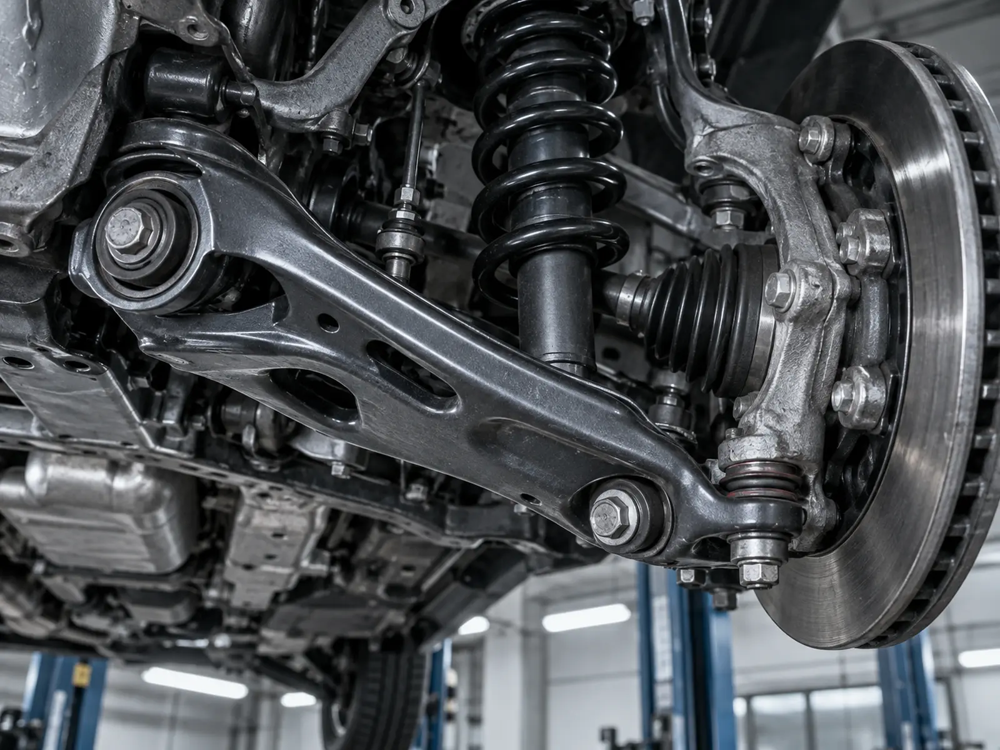
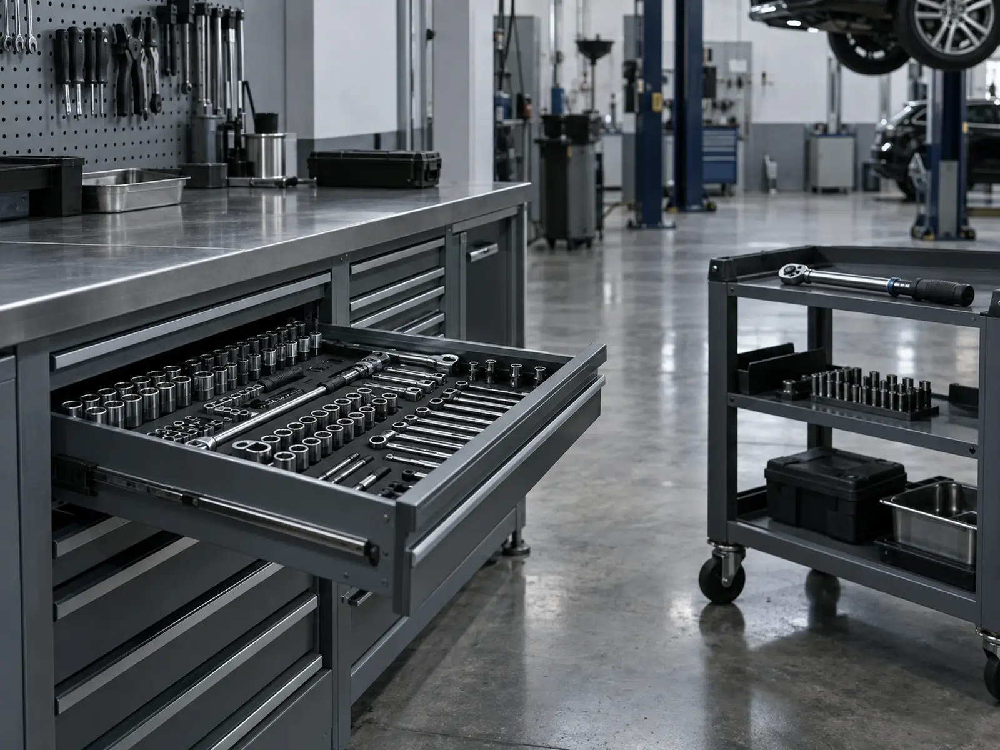

Li Auto
- Приехал сзаполняется по реальному кейсу
- Проверилизаполняется по реальному кейсу
- Сделализаполняется по реальному кейсу
- Результатзаполняется по реальному кейсу
Проводим диагностику и ремонт подвески и ходовой части автомобилей с двигателем внутреннего сгорания, гибридов и электромобилей.
Работаем с Li Auto, ZEEKR, VOYAH, BYD, AVATR и другими поддерживаемыми автомобилями.

Когда стоит проверить подвеску
На диагностику стоит приехать, если:
Не обязательно заранее знать, какой именно узел требует ремонта.

Что проверяем
При диагностике проверяем состояние элементов подвески и ходовой части. В зависимости от конструкции автомобиля смотрим:
После осмотра объясняем, какие детали требуют ремонта или замены.
Какие работы выполняем
В зависимости от найденной неисправности выполняем:
Точный перечень работ зависит от модели автомобиля и результатов диагностики.
Особенности современных автомобилей
В современных автомобилях работа подвески может быть связана с датчиками, электронными блоками и другими системами.
Если после механического ремонта требуется дополнительная диагностика или настройка, проверяем связанные системы автомобиля.
Для Li Auto, ZEEKR, VOYAH, BYD и AVATR используем доступное диагностическое оборудование и программные решения.
Запчасти для ремонта
Подбираем запчасти под конкретную марку, модель и комплектацию автомобиля. При необходимости:

Стоимость
Стоимость зависит от:
После диагностики согласовываем перечень работ и стоимость до начала ремонта.
Практика сервиса


Напишите марку, модель и опишите, как ведёт себя автомобиль. Подскажем, с какой проверки лучше начать.
Частые вопросы
Да. Сначала можно проверить состояние автомобиля и после этого принять решение о ремонте.
Нет. Причину определяем во время диагностики.
Да. Подбираем запчасти под конкретный автомобиль и можем организовать их поставку.
Точную стоимость можно определить после диагностики, когда понятен объём работ и перечень необходимых деталей.
Да. Перечень доступных работ зависит от конкретной марки и модели автомобиля.
Другие услуги

Плановое ТО с заменой необходимых расходных материалов и проверкой состояния автомобиля.
Подробнее
Проверяем не только наличие ошибок, но и причину их появления.
Подробнее
Обслуживание и ремонт тормозов, замена колодок, дисков и других элементов.
Подробнее
Диагностика электронных систем, блоков и связанных между собой компонентов.
Подробнее
Работа с доступными программными функциями: обновления, настройки, интернет, приложения.
Подробнее
Адаптация интерфейса автомобиля для поддерживаемых марок и версий ПО.
ПодробнееПодбор и поставка деталей и расходных материалов для обслуживания и ремонта.
ПодробнееНе нашли нужную работу? Напишите марку, модель и что требуется — подскажем, можем ли выполнить это в сервисе.
Написать намЗапись
Напишите марку, модель и что нужно сделать. Ответим и подскажем, с чего начать.
Если точная причина неисправности неизвестна — достаточно описать, что происходит с автомобилем. Подскажем, с чего начать: с осмотра, диагностики или конкретной сервисной работы.
Контакты
Перед визитом лучше записаться: так подготовим место на посту и заранее проверим, какие расходники понадобятся для вашей модели.